Manual da Adaptação
Passo a passo completo da tela Adaptação, com fotos: a fila de OPs e o Kanban por prazo, iniciar a produção com a equipe e o BOX do carro, pausar, trocar quem trabalha e a equipe da OP (comissão), os recados do Acompanhamento, a chegada do veículo, a viagem da OP externa, concluir com as pendências, retrabalho, devolver ao PCP, ações em lote e importação de técnicos; e as outras abas: SAC veicular (da data ao orçamento e à conclusão), Agendamentos, Voucher de serviços e Equipes. Atualizado em 26/11/2026.
Parte 1A tela Adaptação
Para que serve
A tela Adaptação é onde a equipe de produção vê o que está na fila para adaptar, avisa quem pegou cada carro e em que BOX ele está, acompanha o trabalho até o fim e entrega para o CQ (Controle de Qualidade). É também por ela que a Adaptação cuida da manutenção veicular do SAC, dos agendamentos de manutenção, dos vouchers de serviços e das equipes.
A tela tem cinco abas, logo abaixo do título:
| Aba | Para que serve |
|---|---|
| Produção | A fila das OPs: iniciar, trocar BOX, pausar, concluir, retrabalho. É a aba que abre primeiro. |
| SAC veicular | As OS de manutenção veicular que o SAC manda para a Produção (definir data, receber o carro, orçar, executar, concluir). |
| Agendamentos | Calendário das manutenções: OPs de manutenção esperando data e as OS do SAC já marcadas. |
| Voucher | Emitir e imprimir vouchers de serviços feitos por terceiros (lavagem, película etc.). |
| Equipes | Cadastro das equipes (head line e membros) que aparecem ao iniciar uma OP. |
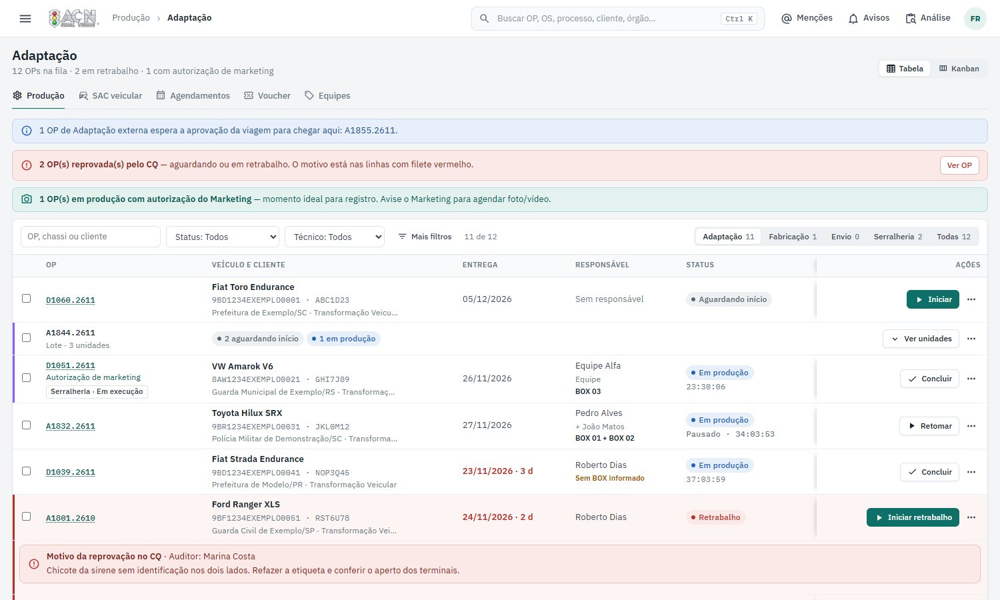
O alto da tela
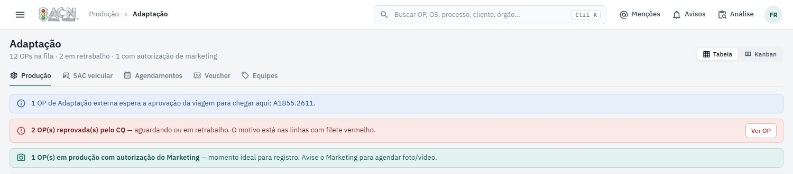
De cima para baixo:
- Título e contadores. "12 OPs na fila · 2 em retrabalho · 1 com autorização de marketing". Os números contam tudo o que a tela lê, sem olhar o filtro.
- Tabela / Kanban (à direita): duas formas de ver a mesma lista. Veja o Kanban.
- As cinco abas.
- Faixas de aviso, que só aparecem quando há o que avisar:
| Faixa | O que significa | O que fazer |
|---|---|---|
| Azul — "OP de Adaptação externa espera a aprovação da viagem para chegar aqui" | A OP é de adaptação fora da fábrica e a viagem ainda não foi aprovada. A OP não aparece na fila até a aprovação. | Nada a fazer aqui. Quando a direção aprovar a viagem, a OP entra na fila sozinha. |
| Vermelha — "OP(s) reprovada(s) pelo CQ" | O CQ reprovou e mandou a OP de volta. O motivo está nas linhas com filete vermelho. | Clique em Ver OP ou procure a linha. Veja Retrabalho. |
| Verde — "OP(s) em produção com autorização do Marketing" | O Marketing autorizou foto e vídeo desse carro. | Avise o Marketing para agendar o registro enquanto o carro está na oficina. |
Filtros e filas
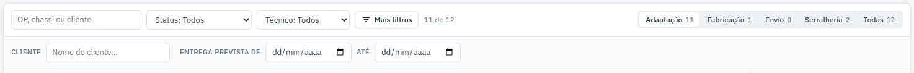
| Filtro | Como usar |
|---|---|
| OP, chassi ou cliente | Digite parte do número da OP, do chassi ou do nome do cliente. Não precisa de acento. |
| Status | Aguardando Início Produção, Em Produção, Retrabalho ou Em Retrabalho. |
| Técnico | Mostra só o que está com um técnico ou equipe. A lista traz só quem aparece na fila de agora. |
| Mais filtros | Abre Cliente e Entrega prevista de … até …. |
| Limpar filtros | Aparece quando algum filtro está ligado. Também aparece "11 de 12": quantas linhas passam do total. |
À direita ficam as filas, com a contagem de cada uma:
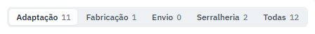
| Fila | O que mostra |
|---|---|
| Adaptação | Veículos adaptados aqui ou pela nossa equipe no local. É a que abre por padrão. |
| Fabricação | Itens que a serralheria fabrica inteiros; ao concluir a serralheria, a OP passa para a Adaptação. |
| Envio | OPs que não passam por produção (só separar, embalar e enviar). |
| Serralheria | Tudo o que passa pela serralheria: carretinhas inteiras e a etapa de serralheria dentro de adaptações. |
| Todas | As filas juntas. |
A tabela
A tabela tem uma linha por OP, com estas colunas:
| Coluna | O que mostra |
|---|---|
| (caixinha) | Marcar a OP para ações em lote. Veja Várias OPs de uma vez. |
| OP | Número da OP (clique para abrir os detalhes) e, embaixo, selos: quantas unidades, anexos, "Autorização de marketing", a serralheria e a viagem. |
| Veículo e cliente | Modelo, chassi, placa, cliente e tipo de projeto. O que falta aparece em vermelho ("sem placa", "sem modelo"). |
| Entrega | Data prevista. Passou do dia, fica em vermelho com os dias de atraso ("23/11/2026 · 3 d"). |
| Responsável | Quem trabalha na OP e, em produção, o BOX. |
| Status | A situação e, quando está em produção, o cronômetro. |
| Ações | O botão principal da situação e o menu ⋯ com o resto. |
Cada situação tem uma linha diferente
Aguardando início — ninguém pegou ainda. Botão Iniciar.
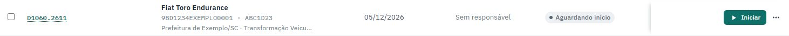
Em produção — mostra o responsável, o BOX e o cronômetro. Botão Concluir. O selo roxo "Autorização de marketing" e o selo "Serralheria · Em execução" aparecem embaixo do número.
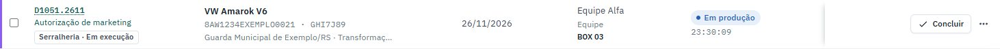
Pausada — o cronômetro para e aparece "Pausado". O botão passa a ser Retomar.
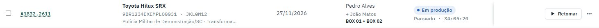
Atrasada e sem BOX — a data fica em vermelho e, onde estaria o BOX, aparece em âmbar "Sem BOX informado": alguém precisa informar em qual BOX o carro está.
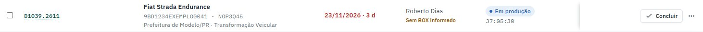
Adaptação externa — a OP tem uma viagem. O botão Viagem · Provisionamento (a etapa da viagem aparece no nome) abre a janela da viagem. O aviso "sem placa" em âmbar diz que falta preencher.
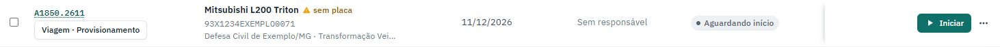
Retrabalho — filete vermelho e, logo abaixo, o motivo da reprovação do CQ. Veja Retrabalho.
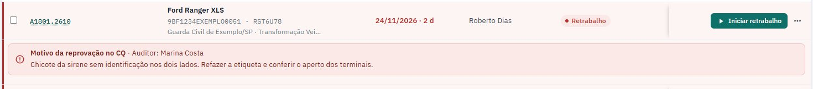
O menu ⋯
O menu muda conforme a situação da OP. Antes de iniciar, ele só tem três itens:
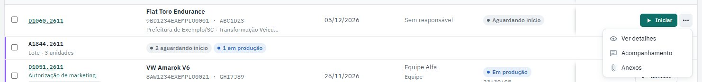
Com a OP em produção, o menu cresce:
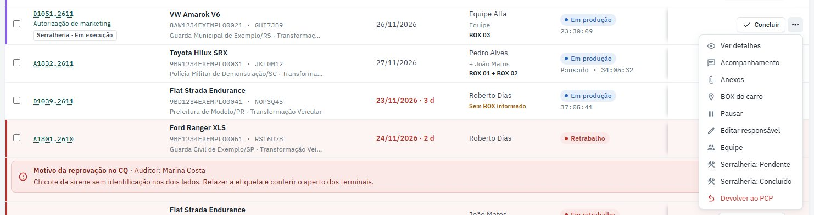
| Item | Aparece quando | O que faz |
|---|---|---|
| Ver detalhes | sempre | Abre a janela completa da OP. |
| Acompanhamento | sempre | Escrever um recado sobre a OP. |
| Viagem desta OP | a OP tem viagem | Abre a viagem. |
| Anexos | sempre | Ver e anexar arquivos. O número aparece quando já há anexos. |
| BOX do carro | em produção ou retrabalho | Informar ou trocar o BOX. |
| Pausar | em produção ou retrabalho, andando | Para o cronômetro. |
| Concluir / Concluir → CQ | pausada | Concluir mesmo pausada. |
| Editar responsável | em produção ou retrabalho | Trocar quem trabalha. |
| Equipe | em produção ou retrabalho | Responsáveis, apoios e serralheria da OP. |
| Serralheria: … | a OP passa pela serralheria | Mudar o andamento da serralheria. |
| Devolver ao PCP (vermelho) | em produção | Mandar a OP de volta ao PCP com um motivo. |
O Kanban
O botão Kanban (no alto, à direita) mostra as mesmas OPs, já filtradas, em colunas pela data de entrega:
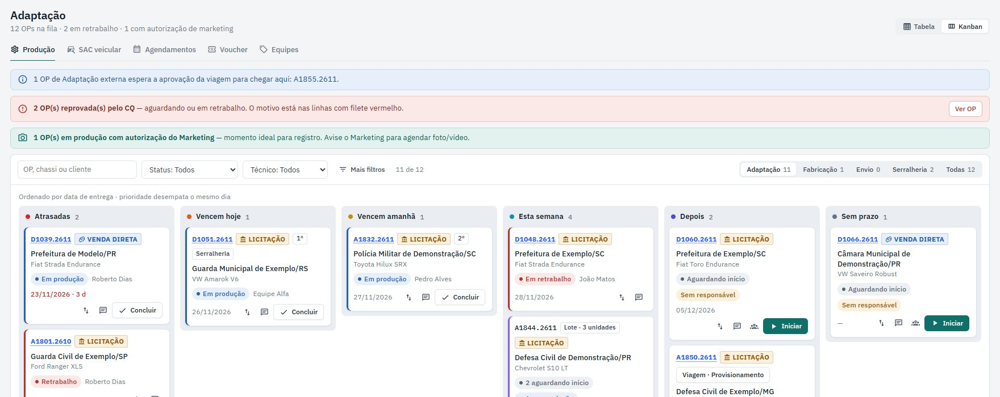
| Coluna | Reúne |
|---|---|
| Atrasadas | entrega já passou |
| Vencem hoje | entrega hoje |
| Vencem amanhã | entrega amanhã |
| Esta semana | entrega nos próximos 7 dias |
| Depois | entrega mais adiante |
| Sem prazo | sem data de entrega |
Dentro de cada coluna, as OPs ficam em ordem de data. A prioridade só desempata o mesmo dia (a data manda, porque é contratual nas licitações).
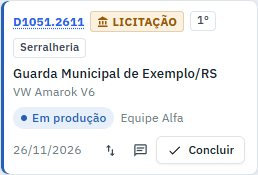
Cada cartão traz o número da OP (clicável), a origem (Licitação ou Venda direta), o selo da prioridade ("1º"), o cliente, o modelo, a situação, o responsável e a data. Os ícones do rodapé:
| Ícone | O que faz |
|---|---|
| ↕ (setas) | Definir prioridade no dia. Pede um número de 1 a 99 (1 = primeira); vazio tira a prioridade. |
| 💬 | Dar um recado sobre a OP (Acompanhamento). |
| 👥 (só antes de iniciar) | Iniciar em dupla ou com uma equipe. |
| Iniciar / Concluir | O mesmo botão da tabela. |
Lotes
Quando uma venda tem várias unidades (OP A1844.2611/01, /02, /03…), a tabela mostra uma linha só para o lote, com a contagem por situação ("2 aguardando início · 1 em produção").
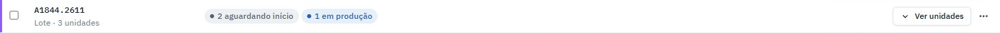
Clique em Ver unidades para abrir cada unidade, que age sozinha (iniciar, concluir, BOX…). Ocultar unidades fecha de novo. A caixinha do lote marca todas as unidades de uma vez.
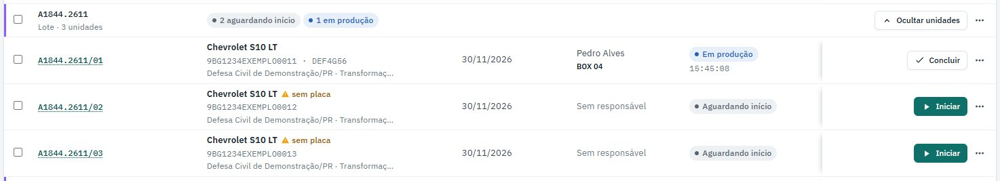
O menu ⋯ do lote tem Importar técnicos/equipes, para atribuir quem trabalha em cada unidade de uma vez. Veja Várias OPs de uma vez.
Palavras que aparecem na tela
| Palavra | O que quer dizer |
|---|---|
| Aguardando início | A OP chegou à Adaptação, mas ninguém iniciou o trabalho. |
| Em produção | Alguém iniciou; o cronômetro está contando. |
| Pausado | O cronômetro parou; a OP segue na oficina. |
| Retrabalho / Em retrabalho | O CQ reprovou. "Retrabalho" espera alguém iniciar o conserto; "Em retrabalho" já está sendo refeito. |
| Head line | O técnico líder de uma equipe. |
| BOX | A vaga da oficina em que o carro está (BOX 01 a 09 e BOX EXTRA). |
| Apoio | Quem ajuda na OP e recebe 0,1% fixo da mão de obra, além do que os responsáveis recebem. |
| CQ | Controle de Qualidade, a etapa depois da Adaptação. |
| Pendência | Peça que depende de outro setor (compra, fabricação, chicote…) e ainda não chegou. |
Parte 2Passo a passo: da fila ao CQ
O caminho normal de uma OP na Adaptação:
- Aguardando início
- Em produção
- Aguardando CQ
Se o CQ reprovar, a OP volta: Retrabalho > Em retrabalho > Aguardando CQ. Se a Adaptação não puder tocar a OP, ela é devolvida ao PCP.
Iniciar a produção
Quando usar: o carro chegou, o material está liberado e alguém vai começar.
Quem faz: quem tem a aba Adaptação.
Passo a passo
- Na linha da OP (ou no cartão do Kanban), clique em Iniciar. Abre a janela Iniciar produção.
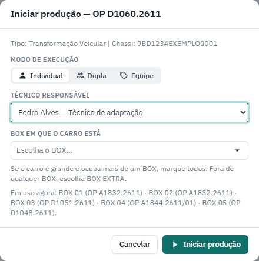
A janela Iniciar produção, com o BOX ainda por escolher - Escolha o Modo de execução:
- Individual: um técnico. A caixa já vem com o seu nome; troque se for outra pessoa.
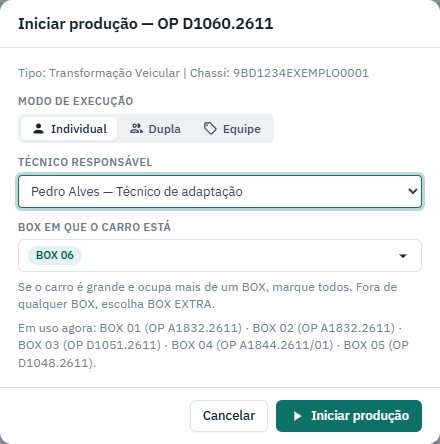
Início individual - Dupla: dois técnicos (Técnico 1 e Técnico 2).
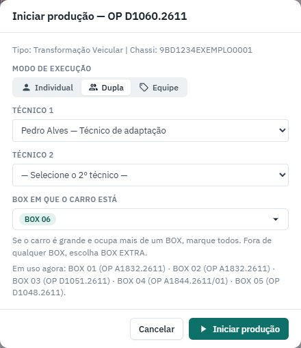
Início em dupla - Equipe: clique no cartão da equipe (o head line aparece no cartão). Se a lista estiver vazia, cadastre a equipe na aba Equipes.
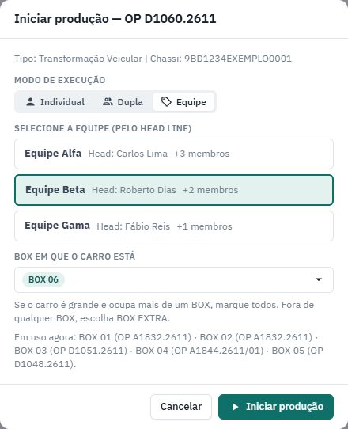
Início com uma equipe
- Individual: um técnico. A caixa já vem com o seu nome; troque se for outra pessoa.
- Em BOX em que o carro está, abra a lista e marque o BOX. Se o carro é grande e ocupa mais de um BOX, marque todos. Se ele não está em nenhum BOX, escolha BOX EXTRA.
- Logo abaixo, "Em uso agora" mostra quais BOX já têm outra OP.
- Clique em Iniciar produção.
O que acontece: a OP passa a Em produção e o cronômetro começa. O sistema registra no histórico da OP e no Acompanhamento "Produção iniciada. Responsável: …. BOX: …", e avisa quem acompanha a OP. Quem foi escolhido entra na lista da janela Equipe da OP.
Vai para: coluna Em produção (e, no Kanban, o cartão fica no mesmo prazo).
Informar ou trocar o BOX
Quando usar: o carro mudou de BOX no meio do trabalho, ou a OP está com o selo âmbar "Sem BOX informado" (acontece com OPs iniciadas em lote e com as mais antigas).
Quem faz: quem tem a aba Adaptação.
- Abra o menu ⋯ da OP e clique em BOX do carro.
- Marque o(s) BOX em que o carro está agora.
- Clique em Salvar BOX.
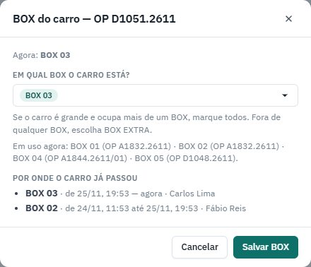
O que acontece: o BOX novo aparece na linha. A janela guarda por onde o carro já passou (de que dia e hora até que dia e hora, e quem informou). O BOX só vale enquanto a OP está em produção ou retrabalho: quando ela vai para o CQ, o BOX fica livre sozinho.
Pausar e retomar
Quando usar: o trabalho parou (falta peça, fim do turno, o carro foi para outro serviço).
- Menu ⋯ da OP > Pausar. O sistema não pede motivo.
- A linha passa a mostrar Pausado com o tempo acumulado.
- Para continuar, clique em Retomar (o botão no lugar de Concluir).
O que acontece: o cronômetro conta só o horário de expediente (segunda a sexta, das 8h às 17h45); fora dele aparece o selo Fora do expediente ao lado do tempo. O tempo parado entra na conta e é descontado do tempo de produção que vai para o CQ.
Mudar quem trabalha na OP
Há dois caminhos, para duas necessidades.
Editar responsável (trocar o modo)
Use quando a pessoa ou a equipe trocou por inteiro.
- Menu ⋯ > Editar responsável.
- Escolha o Modo de execução (Individual, Dupla ou Equipe) e quem é.
- Clique em Salvar alteração.
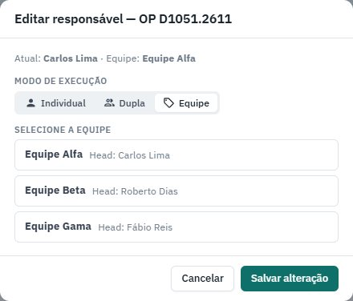
O histórico da OP guarda "Responsável alterado para: …".
Equipe da OP (responsáveis, apoios e serralheria)
Use quando entra ou sai alguém no meio do trabalho, sem mudar o modo. É esta janela que diz quem recebe comissão.
- Menu ⋯ > Equipe.
- Em cada bloco, escolha a pessoa na lista e clique em Adicionar. A lixeira tira.
- Clique em Fechar (cada mudança já fica gravada).
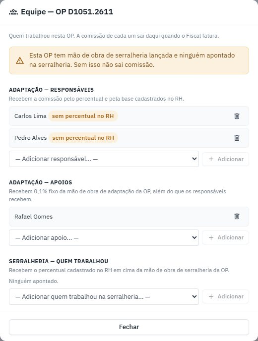
| Bloco | Quem entra | Comissão |
|---|---|---|
| Adaptação — Responsáveis | Quem tocou a adaptação | Pelo percentual cadastrado no RH de cada um |
| Adaptação — Apoios | Quem ajudou | 0,1% fixo da mão de obra de adaptação da OP, além do que os responsáveis recebem |
| Serralheria — Quem trabalhou | Quem fez o trabalho de serralheria | Pelo percentual do RH, em cima da mão de obra de serralheria da OP |
Acompanhamento: o recado da OP
Quando usar: sempre que há novidade que o vendedor, o PCP ou o cliente precisam saber.
Quem faz: qualquer pessoa da Adaptação.
- Menu ⋯ > Acompanhamento (ou o ícone 💬 do cartão do Kanban).
- Clique num recado rápido (um clique registra e avisa) ou escreva no campo "Descreva o andamento, decisão ou pendência…".
- Para chamar alguém, escreva @ e o nome.
- Clique em Registrar.
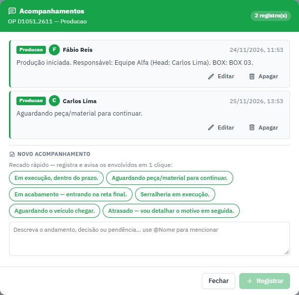
Os recados rápidos: "Em execução, dentro do prazo." · "Aguardando peça/material para continuar." · "Em acabamento — entrando na reta final." · "Serralheria em execução." · "Aguardando o veículo chegar." · "Atrasado — vou detalhar o motivo em seguida."
O que acontece: o recado fica gravado com o seu nome, a data e o setor, e aparece para quem acompanha a OP na caixa de Menções. Cada registro tem Editar e Apagar.
Anexos
Menu ⋯ > Anexos (o número mostra quantos já existem). Use Anexar Arquivo para subir fotos, documentos ou o que for preciso da OP. Fechar volta à lista.
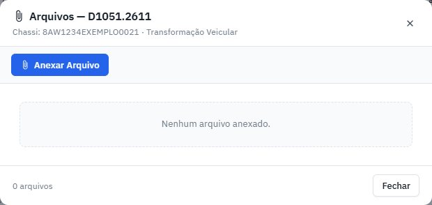
Ver detalhes da OP
Menu ⋯ > Ver detalhes (ou um clique no número da OP) abre a janela da OP, a mesma que os outros setores usam: onde está agora, progresso, itens vendidos, anexos, atualizações do andamento, histórico de movimentações, prazos, veículo e entrega e responsáveis por setor.
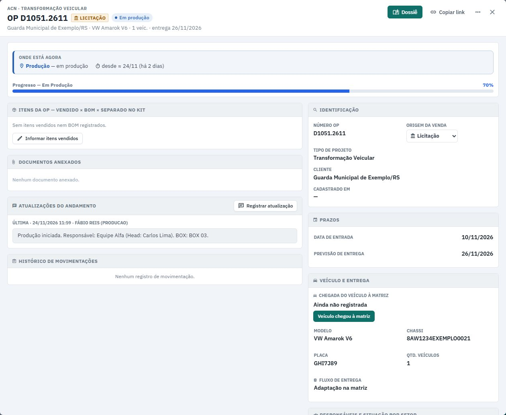
No alto ficam o Dossiê (tudo o que está ligado à OP, com PDF), o Copiar link (para mandar a OP para alguém) e o menu ⋯.
Veículo chegou à matriz
Quando usar: o carro de uma OP de adaptação chegou à fábrica.
Quem faz: Admin, gerentes e quem tem as abas SAC, PCP, Adaptação, CRM ou Comercial.
- Abra a janela da OP (Ver detalhes).
- No quadro Veículo e entrega, em Chegada do veículo à matriz ("Ainda não registrada"), clique em Veículo chegou à matriz.
- O sistema pergunta "Registrar que o veículo da OP … chegou à matriz?" (e lembra que o PCP, a Adaptação e o vendedor serão avisados). Confirme.
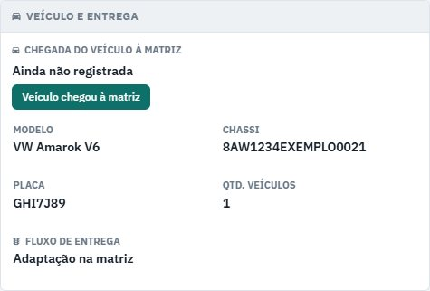
O que acontece: o sistema grava o dia e a hora reais, registra no histórico e no andamento e avisa o PCP, a Adaptação e o vendedor na caixa de Menções. O quadro passa a mostrar "Chegou em dd/mm às hh:mm, registrado por …". Se a OP tem prazo em dias depois da chegada, a data de entrega passa a contar a partir desse dia.
Viagem da OP (adaptação externa)
Nas OPs de Adaptação externa (o serviço é feito no local do cliente), o sistema cria a viagem sozinho quando o Almoxarifado fecha o kit. A OP só chega à fila da Adaptação depois que a viagem é aprovada (veja a faixa azul no alto da tela).
Na fila, a OP tem o botão Viagem · \<etapa\> (por exemplo, "Viagem · Provisionamento") e, no menu ⋯, o item Viagem desta OP. Os dois abrem a viagem, onde a Adaptação preenche a equipe, o veículo da frota e o km de saída. Quem preenche o resto é o Financeiro e o Comercial; o passo a passo completo está no Manual das Viagens.
Concluir a produção
Quando usar: o trabalho de adaptação terminou e a OP vai para o CQ.
Quem faz: quem tem a aba Adaptação.
Passo a passo
- Clique em Concluir na linha (ou no cartão). Se a OP está pausada, use Concluir no menu ⋯.
- O sistema confere as pendências da OP antes de deixar passar.
Se está tudo certo: a OP vai para Aguardando CQ, o tempo de produção fica gravado (horas úteis, sem as pausas), o sistema avisa os envolvidos e o Acompanhamento registra "Produção concluída. OP liberada para o Controle de Qualidade."
Se há pendência aberta: o sistema não deixa concluir e mostra o que falta:
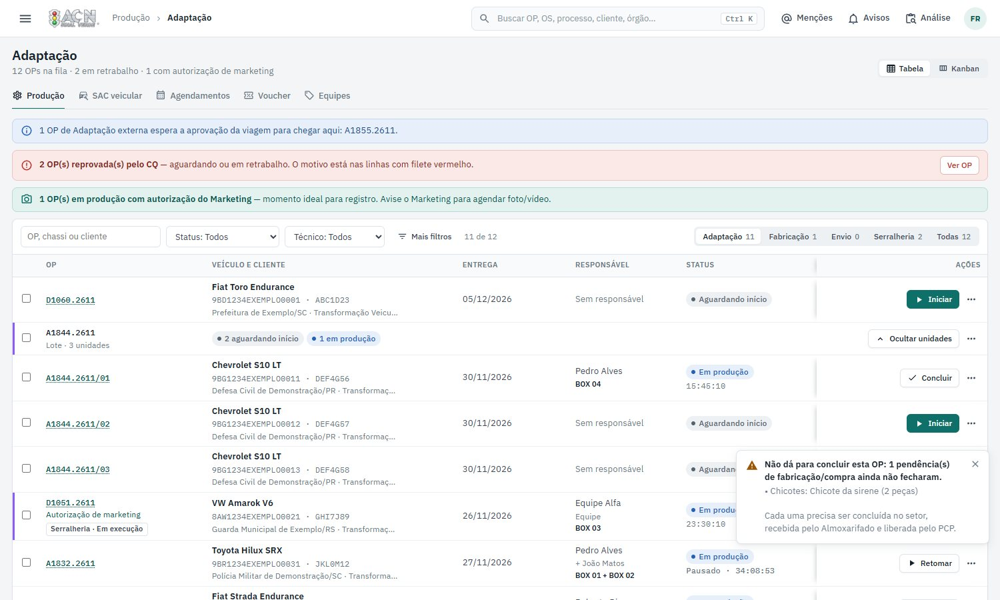
Retrabalho: quando o CQ reprova
Quando o CQ reprova, a OP volta para a fila com a situação Retrabalho, filete vermelho e o motivo logo abaixo da linha, com o nome do auditor (veja a foto da linha na tabela).
- Leia o motivo da reprovação. Se houver retrabalho anterior, o tempo dele aparece ao lado.
- Clique em Iniciar retrabalho. A OP passa a Em retrabalho e um novo cronômetro começa. O motivo do CQ vai para o histórico e para o Acompanhamento.
- Conserte. Se precisar parar, use Pausar do mesmo jeito.
- Clique em Concluir → CQ e confirme a pergunta "Concluir o retrabalho da OP …? Ela volta para o CQ."
O que acontece: o tempo de retrabalho fica gravado, o motivo antigo é limpo e a OP volta para Aguardando CQ.
Devolver ao PCP
Quando usar: a OP não pode ser feita agora (faltou material, a lista está errada, o veículo não serve) e precisa voltar ao PCP.
Quem faz: quem tem a aba Adaptação, com a OP em produção.
- Menu ⋯ > Devolver ao PCP (item vermelho).
- Escreva o Motivo / Problema. Escreva sempre: é o texto que o PCP lê.
- Clique em Devolver ao PCP.
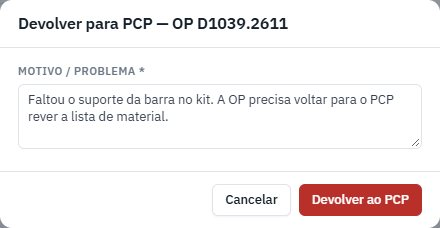
O que acontece: a OP vira Devolvida PCP e sai da fila da Adaptação. O motivo vai para o histórico da OP.
Serralheria: avançar o andamento
As OPs que passam pela serralheria mostram o selo Serralheria · \<situação\> embaixo do número. No menu ⋯ há itens para mudar o andamento: Serralheria: Pendente, Serralheria: Em execução e Serralheria: Concluído (o que já é a situação atual não aparece).
- Na venda do tipo fabricação serralheria com envio, ao concluir a serralheria a OP passa para a fila da Adaptação, "Aguardando início", sem responsável (quem adapta não é quem soldou; o nome anterior fica no histórico). O sistema pergunta antes de mudar.
- Quando a serralheria é só uma etapa dentro de uma adaptação, nada muda de fila.
Várias OPs de uma vez
Marque as caixinhas das OPs (de qualquer lote, não precisam ser do mesmo). Aparece a barra N selecionadas na parte de baixo da tela:
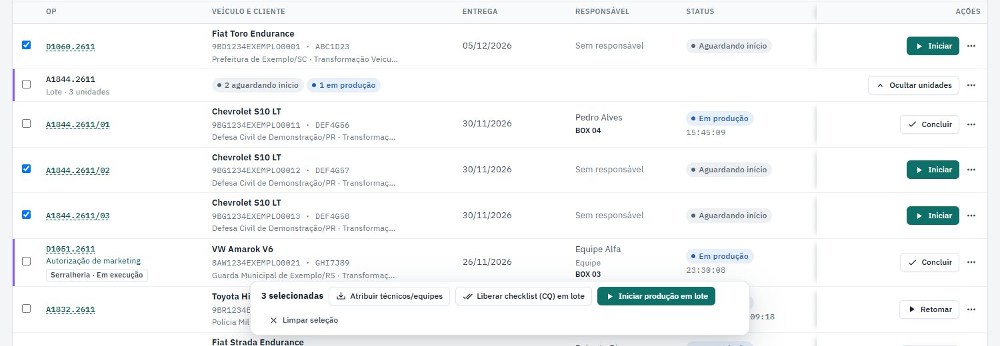
| Botão | O que faz |
|---|---|
| Atribuir técnicos/equipes | Abre a janela para colar, de uma planilha, quem trabalha em cada OP. |
| Liberar checklist (CQ) em lote | Manda para o CQ todas as marcadas que estão em produção. Para na primeira que não puder (por exemplo, com pendência) e diz até onde foi. |
| Iniciar produção em lote | Inicia todas as marcadas que estão aguardando início, sem responsável e sem BOX. |
| Limpar seleção | Desmarca tudo. |
Importar técnicos e equipes
- Marque as OPs (ou use o ⋯ do lote > Importar técnicos/equipes) e clique em Atribuir técnicos/equipes.
- Copie da planilha (Ctrl+C) duas colunas — o chassi (ou a placa) e o responsável — e cole (Ctrl+V) na caixa. O responsável pode ser:
- um técnico (individual);
- "Técnico A + Técnico B" (dupla);
- o nome de uma equipe cadastrada.
- Confira a Prévia: quantas serão aplicadas e quais ficaram sem correspondência (com o motivo).
- Clique em Confirmar e aplicar.
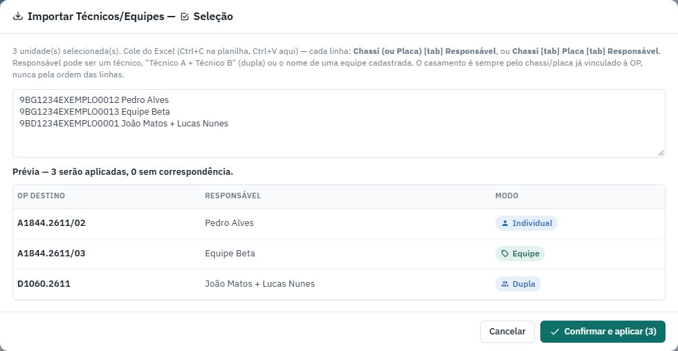
Parte 3As outras abas da Adaptação
SAC veicular
Para que serve: o SAC abre as OS de manutenção veicular (revisão, conserto de um equipamento instalado, garantia) e, em cada etapa em que a bola está com a Produção, é aqui que a Produção age. As etapas do SAC (aceite, aprovação do cliente) acontecem na tela do SAC.
Quem faz: quem tem a aba Adaptação.
- Em Provisionamento
- Aguardando Aceite SAC
- Provisionada
- Verificação e Orçamento
- Aguardando Aprovação Cliente
- Aguardando Início
- Em Execução
- Aguardando CQ
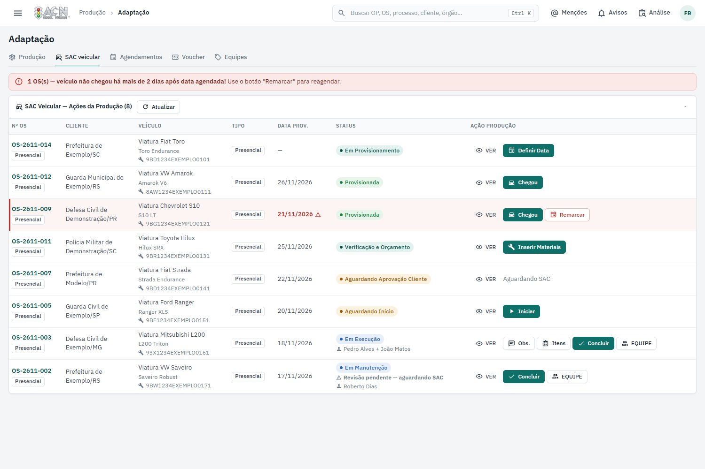
A tabela mostra, por OS: o número e o tipo de avaliação, o cliente, o veículo (equipamento, modelo e chassi, com "sem modelo" ou "sem chassi" em vermelho quando falta), a data provisionada, o status (com o técnico, quando já há) e a ação da Produção. O botão Atualizar relê a lista (ela também se atualiza sozinha a cada 30 segundos).
O botão VER de qualquer linha abre o relato do cliente (defeito reclamado), as observações e os itens já orçados.
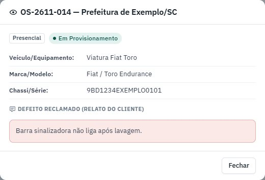
O que a Produção faz em cada etapa
| Status da OS | Botão | O que a Produção faz |
|---|---|---|
| Em Provisionamento | Definir Data | Diz quando o carro pode ser recebido |
| Aguardando Aceite SAC | — (aparece "Aguardando SAC") | Nada: o SAC confirma a data com o cliente |
| Provisionada | Chegou (e Remarcar, se atrasar) | Confirma que o carro chegou |
| Verificação e Orçamento | Inserir Materiais | Lista as peças e o serviço e envia para aprovação |
| Aguardando Aprovação Cliente | — ("Aguardando SAC") | Nada: o SAC negocia com o cliente |
| Aguardando Início | Iniciar | Escolhe quem vai executar |
| Em Execução | Obs., Itens, Concluir, EQUIPE | Executa e conclui |
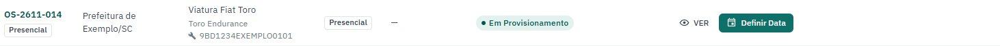
Definir a data de recebimento
- Na OS Em Provisionamento, clique em Definir Data.
- Escolha a Nova data de recebimento (obrigatória) e o Período (Manhã ou Tarde).
- Clique em Confirmar.
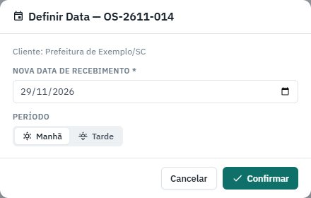
O que acontece: a OS passa a Aguardando Aceite SAC e o sistema avisa o SAC ("Produção definiu data — OS … — Data: …"). O SAC confirma com o cliente; a OS volta aqui como Provisionada.
Confirmar a chegada do carro
- Na OS Provisionada, clique em Chegou.
- Confira o cliente, a data prevista e o próximo status que o sistema mostra.
- Clique em Confirmar Chegada.
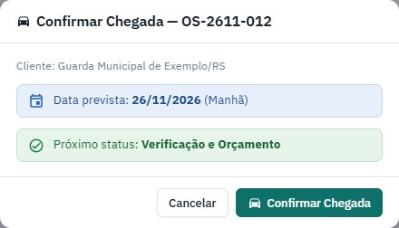
O que acontece: o sistema grava o dia e a hora da chegada e a OS vai para Verificação e Orçamento (ou direto para Aguardando Início, se é sem cobrança). O SAC é avisado ("Veículo chegou…").
Carro que não chegou: passados mais de 2 dias da data marcada, uma faixa vermelha avisa ("OS(s) — veículo não chegou há mais de 2 dias após data agendada!"), a linha fica em alerta e a data ganha um ⚠. Use Remarcar: abre a janela Remarcar Data, com a data anterior em vermelho, para marcar outra (escolha a data e o período e clique em Confirmar; a OS volta a Aguardando Aceite SAC, para o SAC combinar de novo com o cliente).
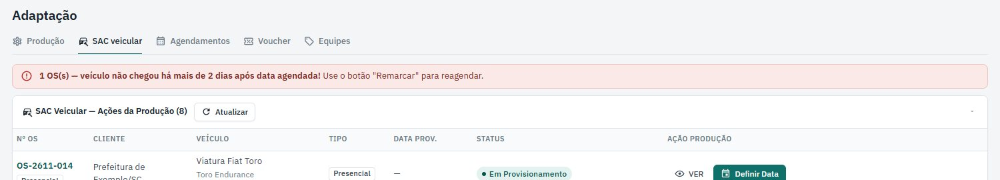
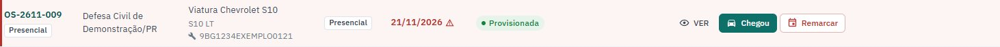
Verificação e orçamento
- Na OS Verificação e Orçamento, clique em Inserir Materiais.
- Preencha a lista: Código, Descrição, Qtd e Vl. Unit. (o total de cada linha e o TOTAL se calculam sozinhos). Use Adicionar Item para mais linhas e o × para tirar.
- Clique em Enviar para Aprovação.
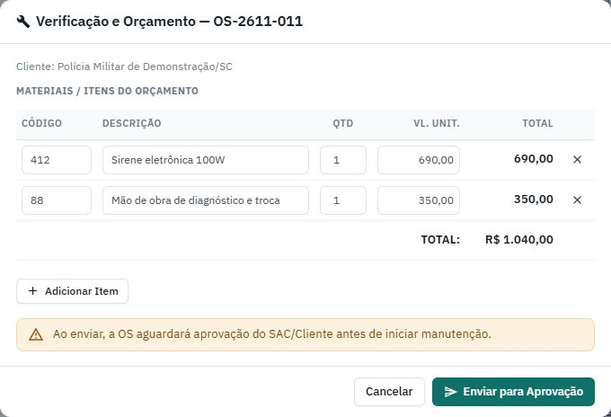
Iniciar a manutenção
- Na OS Aguardando Início, clique em Iniciar.
- Escolha o Modo de execução (Individual, Dupla ou Equipe) e quem é. O funcionamento é o mesmo de iniciar uma OP.
- Clique em Iniciar Manutenção.
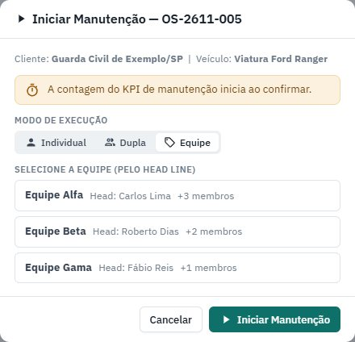
O que acontece: a OS vai para Em Execução e o KPI de manutenção (o cronômetro da execução) começa a contar. As pessoas escolhidas entram na lista da janela EQUIPE da OS.
Durante a execução
Uma OS Em Execução tem quatro botões:
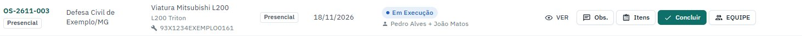
| Botão | Para que serve |
|---|---|
| Obs. | Guarda uma observação sem concluir ("visível na impressão da OS"). |
| Itens | Conferência de itens: revise os itens do orçamento, tire (×) o que não foi feito e acrescente os extras. O SAC enxerga as mudanças. Clique em Salvar Itens. |
| Concluir | Conclui a manutenção. Veja abaixo. |
| EQUIPE | Quem trabalhou: responsáveis (comissão pelo percentual deles) e apoios (0,1% fixo da mão de obra da OS). |
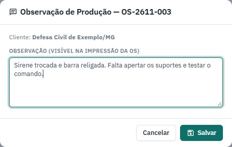
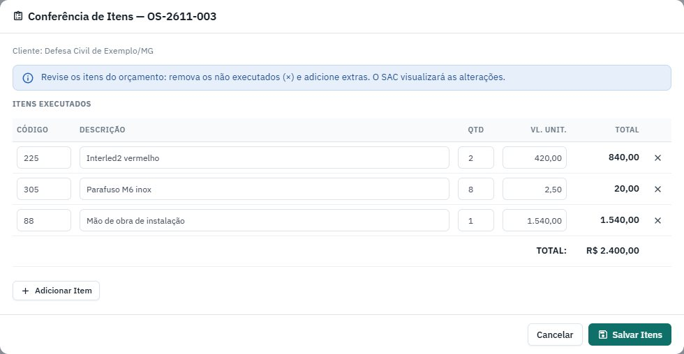
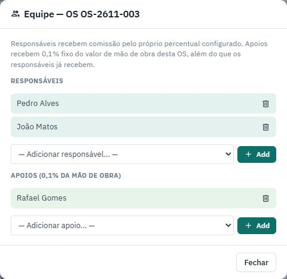
Concluir a manutenção
- Clique em Concluir. A janela traz os Materiais utilizados (já preenchidos com o que foi conferido ou orçado).
- Ajuste os itens, se for o caso, e escreva as Observações.
- Clique em CONCLUIR MANUTENÇÃO.
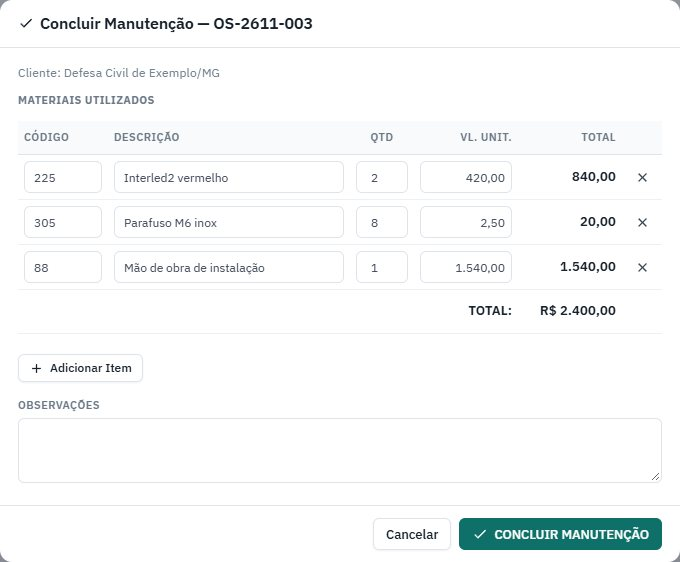
O que acontece, e depende do total:
- O total dos itens bate com o orçamento aprovado (ou a OS é sem cobrança): a OS vai para Aguardando CQ e o tempo da execução fica gravado.
- O total não bate: a OS não avança. Ela fica pendente de revisão (a linha mostra "Revisão pendente — aguardando SAC") e o SAC é avisado para negociar o novo valor com o cliente. Depois que o SAC resolver, conclua de novo.
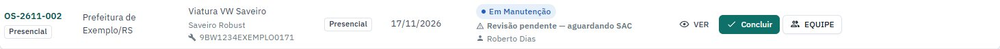
Agendamentos
Para que serve: marcar o dia em que o carro de uma OP de manutenção é recebido e ver, no calendário do mês, tudo o que já está marcado: as OPs de manutenção e as OS do SAC que têm data.
Quem faz: quem tem a aba Adaptação.
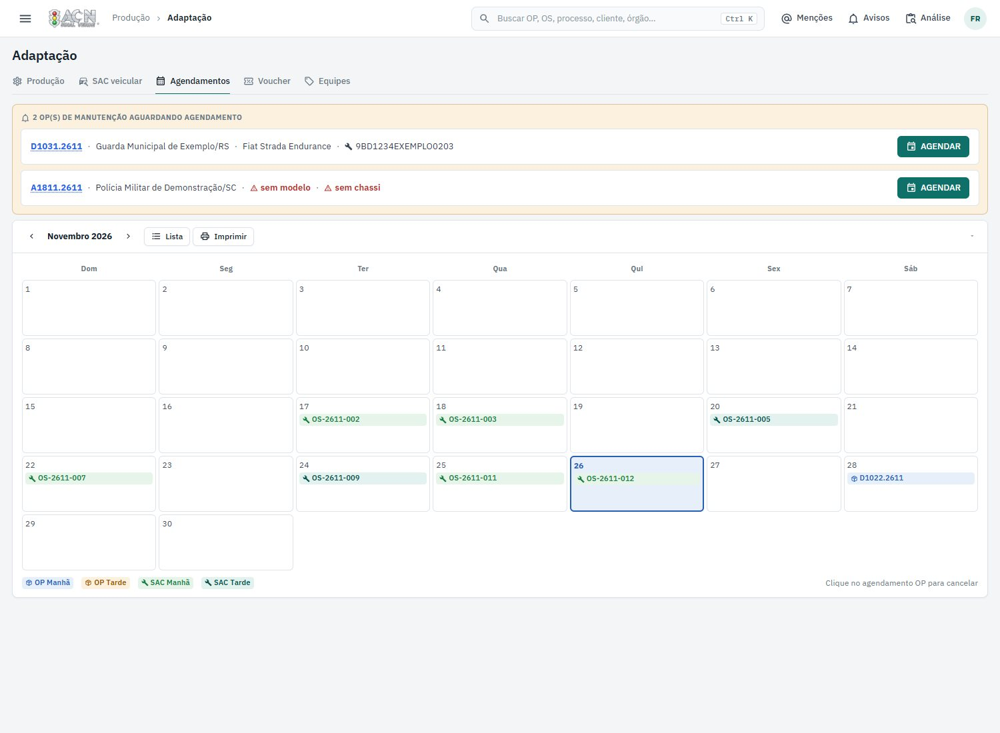
Agendar uma OP
- No quadro âmbar "N OP(s) de Manutenção aguardando agendamento", ache a OP (o número abre a OP) e clique em AGENDAR.
- Preencha a Data de recebimento do carro (obrigatória), o Período (Manhã ou Tarde) e as Observações (defeitos relatados, histórico…).
- Em Quem mais participa, escolha quem deve ver o agendamento na agenda dele (opcional).
- Clique em Confirmar Agendamento.
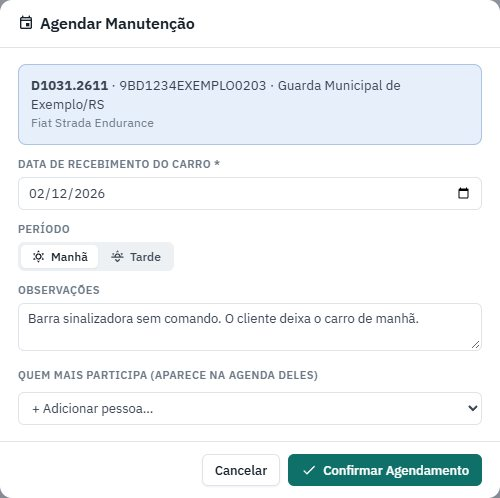
O que acontece: a OP passa a Manutenção Agendada, aparece no calendário, o histórico da OP registra o dia e o período e as pessoas escolhidas são avisadas. Se a OP não conseguir mudar de situação, o agendamento é desfeito para você tentar de novo sem duplicar.
Ler o calendário
- As setas ‹ › mudam o mês.
- O dia de hoje fica destacado.
- Cada etiqueta é um agendamento. A cor diz o tipo e o período:
| Etiqueta | Quer dizer |
|---|---|
| OP Manhã (azul) / OP Tarde (âmbar) | OP de manutenção agendada |
| SAC Manhã (verde) / SAC Tarde (roxo) | OS do SAC com data de recebimento |
- Passe o mouse sobre a etiqueta para ler a OP, o chassi e o cliente.
Cancelar um agendamento
Clique na etiqueta da OP no calendário (a legenda diz "Clique no agendamento OP para cancelar") e confirme. A OP volta a "Aguardando agendamento". As etiquetas do SAC não se cancelam por aqui: quando o carro de uma OS do SAC atrasa, a data se muda pelo botão Remarcar, na aba SAC veicular.
Lista e impressão
O botão Lista troca o calendário por uma tabela com todos os agendamentos (data, período, OP, chassi, cliente, observações) e o botão Cancelar de cada linha. Calendário volta. Imprimir abre uma folha com a lista, pronta para imprimir.
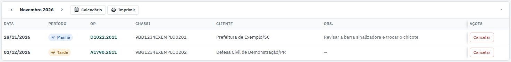
Voucher
Para que serve: emitir o voucher de serviço que o prestador (lava-rápido, instalador de película, plotagem, funilaria…) apresenta para fazer o serviço em um ou mais carros da empresa, e guardar o histórico dos vouchers emitidos.
Quem faz: quem tem a aba Adaptação.
Emitir um voucher
- Na aba Voucher, no quadro Novo Voucher de Serviço, escolha o Tipo de serviço (obrigatório).
- Preencha o Nº PV / OP (obrigatório), a Data do serviço, o Prestador do serviço e Autorizado por.
- Na tabela Veículos / Itens do serviço, preencha uma linha por carro: Placa / Chassi, Modelo e o Valor do serviço (R$). O VALOR TOTAL se soma sozinho. Use Adicionar Veículo para mais carros e o × para tirar uma linha.
- Clique em Salvar Voucher. Limpar apaga o que foi digitado.
Cadastrar um tipo de serviço novo
- Ao lado da lista de tipos, clique no + (verde).
- Aparece o Cadastro de Tipos de Serviço, com os tipos que já existem. Escreva o nome do novo tipo e clique em Salvar: ele já fica escolhido no formulário.
- Para tirar um tipo, clique no × dele e confirme.
Imprimir ou excluir um voucher emitido
O quadro Vouchers Emitidos lista os últimos 100, com número, tipo, veículos, valor total, data, prestador e quem autorizou.
| Botão | O que faz |
|---|---|
| Imprimir | Abre a folha do voucher (dados do serviço, veículos com valor e total, e o aviso de que o voucher é válido para os serviços descritos e deve ser apresentado ao prestador) e já chama a impressão. Se o navegador bloquear a janela, libere os pop-ups do sistema. |
| Lixeira (vermelha) | Exclui o voucher, depois da pergunta "Excluir este voucher?". |
Equipes
Para que serve: cadastrar as equipes de produção. Cada equipe tem um head line (técnico líder) e membros. É esta lista que aparece quando se inicia uma OP no modo Equipe e na importação de técnicos.
Quem faz: quem tem a aba Adaptação.
Criar uma equipe
- Clique em Nova Equipe.
- Escreva o Nome da equipe (obrigatório).
- Escolha o Head line (obrigatório): a lista traz os técnicos do departamento de produção.
- Em Membros da equipe, escolha o técnico e clique em Adicionar. Repita. O × de cada nome tira.
- Clique em Criar Equipe.
Editar ou excluir
- Editar abre a mesma janela com os dados da equipe; clique em Salvar Alterações.
- A lixeira vermelha tira a equipe da lista, depois da pergunta "Excluir equipe …?". As OPs que já foram iniciadas com essa equipe continuam mostrando o nome dela.
Parte 4Avisos, regras e dúvidas
Quem recebe cada aviso
Os avisos chegam na caixa de Menções (o ícone @ no alto do sistema). Clicar no aviso abre a OP ou a viagem por cima da tela em que você está.
| Quando | Quem recebe | O que diz |
|---|---|---|
| Alguém inicia a produção, conclui a produção, mexe na serralheria ou escreve um recado no Acompanhamento | Quem acompanha a OP (vendedor, PCP, quem foi marcado com @) | O texto do recado: "Produção iniciada. Responsável: …. BOX: …", "Produção concluída…", e assim por diante |
| Alguém marca Veículo chegou à matriz | PCP, Adaptação e o vendedor da OP | A chegada do veículo |
| Uma viagem da OP é aprovada (chega a Provisionamento) | Cada setor com a sua parte; para a Adaptação: equipe, veículo e km de saída | Falta a parte do seu setor |
| A viagem sai em 2 dias ou menos com algo faltando (segunda a sexta, 8h) | Adaptação (equipe, veículo, km) e Financeiro (verba) | O que falta para a equipe sair; uma vez só por viagem |
| A Produção define a data de uma OS veicular, confirma a chegada do carro, envia o orçamento ou deixa a OS em revisão pendente | O SAC | O que a Produção fez, com cliente e OS |
| Alguém é marcado como participante de um agendamento de manutenção | A pessoa marcada | "Você foi adicionado ao agendamento da manutenção da OP … em … (período)" |
Quem pode o quê
| O que | Quem |
|---|---|
| Ver a tela e usar as cinco abas (iniciar, concluir, BOX, equipes, vouchers, agendamentos, SAC veicular) | Quem tem a aba Adaptação |
| Registrar Veículo chegou à matriz | Admin, gerentes e quem tem as abas SAC, PCP, Adaptação, CRM ou Comercial |
| Aprovar a viagem da OP externa | A direção (Admin e gerentes) |
| Pendências da OP: liberar | O PCP (a Adaptação só conclui depois) |
| Resolver a revisão de orçamento de uma OS veicular | O SAC |
| Editar a janela completa da OP (itens vendidos, prazos, status) | Admin e gerentes |
O que trava cada passo
| Passo | Só segue se… |
|---|---|
| Iniciar a produção | Há pelo menos um BOX escolhido; no modo Dupla, os dois técnicos; no modo Equipe, uma equipe |
| Concluir a produção | Todas as pendências (fabricação e compra) estão concluídas no setor, recebidas pelo Almoxarifado e liberadas pelo PCP; e a leitura das pendências deu certo |
| Concluir o retrabalho | Você confirma a pergunta (o tempo do retrabalho fica gravado) |
| Definir data (SAC veicular) | Você escolheu a data |
| Enviar o orçamento (SAC veicular) | Há pelo menos um item |
| Iniciar a manutenção (SAC veicular) | Há técnico (individual), os dois técnicos (dupla) ou uma equipe |
| Concluir a manutenção (SAC veicular) | O total dos itens bate com o orçamento aprovado; se não bate, a OS fica em revisão e o SAC resolve |
| Salvar um voucher | Tem Tipo de serviço e Nº PV / OP |
| Criar uma equipe | Tem Nome e Head line |
| Confirmar a chegada do carro (SAC veicular) | A OS ainda está na etapa que você viu: se o SAC mexeu antes, o sistema avisa para atualizar a tela e não grava |
Como o tempo é contado
- O cronômetro da OP conta horas úteis: segunda a sexta, das 8h às 17h45. Fora desse horário ele não anda e aparece o selo Fora do expediente.
- Pausar para o cronômetro; Retomar continua e soma o tempo parado ao total que será descontado.
- Ao concluir, o sistema grava o tempo de produção (horas úteis menos as pausas); no retrabalho, grava o tempo do retrabalho à parte.
- Na OS veicular, o cronômetro (KPI de manutenção) começa em Iniciar Manutenção e termina em Concluir.
Dúvidas frequentes
A OP sumiu da fila. Confira (1) a fila escolhida (uma OP de envio não aparece na fila Adaptação; use Todas), (2) os filtros (use Limpar filtros) e (3) a faixa azul no alto: uma OP de Adaptação externa só entra depois que a viagem é aprovada.
A faixa vermelha diz "Não foi possível ler as OPs da Produção". A leitura falhou (internet ou servidor). Clique em Tentar de novo. Isso não quer dizer que a fila esteja vazia: a lista que aparece é a da última vez que deu certo.
Aparece "Sem BOX informado" em âmbar. A OP foi iniciada em lote ou antes de o BOX existir. Menu ⋯ > BOX do carro e marque onde o carro está.
Cliquei em Iniciar em lote e a OP ficou "Sem responsável". É assim de propósito: o início em lote não pede responsável nem BOX. Depois, use Atribuir técnicos/equipes (planilha) ou Editar responsável em cada OP, e BOX do carro.
Não consigo concluir a OP. Há uma pendência de compra, fabricação ou chicote. A mensagem diz qual. Cobre o setor dela e o PCP; só depois que a pendência estiver liberada o botão Concluir funciona.
O carro mudou de BOX. Menu ⋯ > BOX do carro > marque o novo > Salvar BOX. O histórico guarda onde ele passou.
Entrou uma pessoa na OP depois que ela já tinha começado. Menu ⋯ > Equipe > escolha em Responsáveis ou Apoios > Adicionar. Não precisa trocar o modo.
Apareceu "sem percentual no RH" ao lado de um nome. O RH ainda não cadastrou o percentual de comissão dessa pessoa. Avise o RH: sem ele, não sai comissão.
Devolvi uma OP ao PCP por engano. Não há botão para desfazer na Adaptação. Peça ao PCP que devolva a OP para a Adaptação.
O CQ reprovou e não sei o que fazer. Leia o motivo no quadro vermelho abaixo da linha. Clique em Iniciar retrabalho, conserte e use Concluir → CQ.
O agendamento está errado. Clique na etiqueta da OP no calendário, confirme o cancelamento (a OP volta a aguardar agendamento) e agende de novo. Para OS do SAC, use Remarcar (só aparece se o carro atrasou).
Cliquei em Imprimir no voucher e nada abriu. O navegador bloqueou a janela de impressão. Libere os pop-ups do sistema e clique de novo.
FimHistórico deste manual
- 26/11/2026 — Manual criado, com 55 fotos de dados inventados: a tela Produção (filas, filtros, tabela, Kanban e lotes), o passo a passo da OP (iniciar com BOX, pausar, equipe, acompanhamento, anexos, chegada do veículo, viagem, concluir, retrabalho, devolver ao PCP e ações em lote) e as abas SAC veicular, Agendamentos, Voucher e Equipes, com avisos, regras e dúvidas.